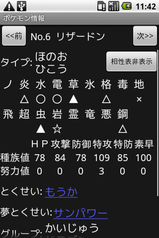
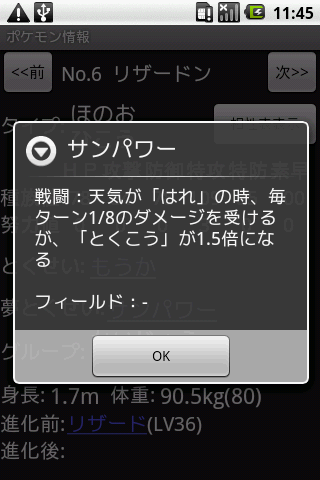
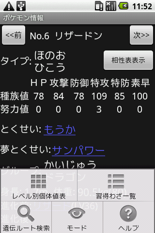

デフォルトでは隠れて見えませんが、「相性表表示」ボタンをクリック(タップ)することで表示することができます(もう一度クリックすれば再度隠れます)。表示される記号については相性表のページを参照してください。
画面の上部にある前ボタン・次ボタンをクリックすることで閲覧する情報の前後移動が行えます。このときの前後とはポケモン情報画面に切り替わる前の画面に表示されていたリストの前後のことです。
表示されているとくせい(通常特性と夢特性)をクリックすることでそのとくせいの戦闘中の効果・フィールド上の効果を確認できます。
進化前・進化後に表示されているポケモンをクリックすることで、そのポケモンの情報に表示を切り替えられます。
メニューから他画面への切り替え、ヘルプが行えます。
